A quiet room,
one day of light.
The products are objects in a sunlit diorama built from three.js primitives, CC0 textures and a Poly Haven HDRI. Scroll and the camera walks in while the arch of light crosses the room: morning on the back wall, noon on the shelf, dusk on a fractured stone with a molten seam. Around it, a bespoke icon system: one stroke, one drop of glaze.
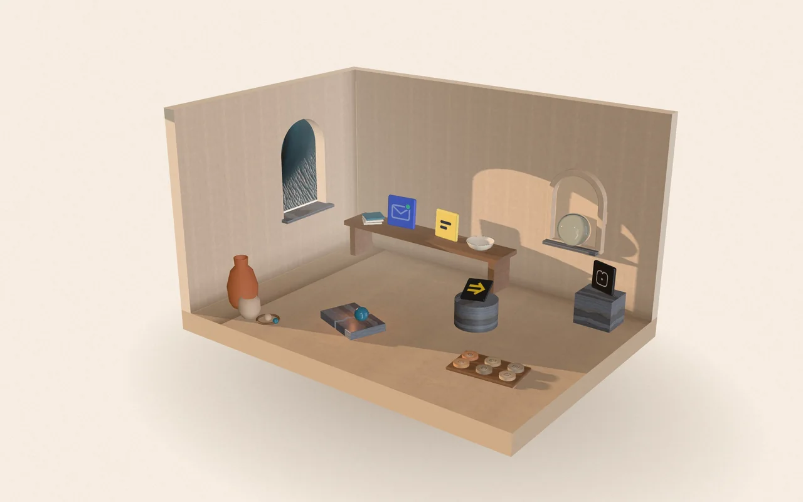
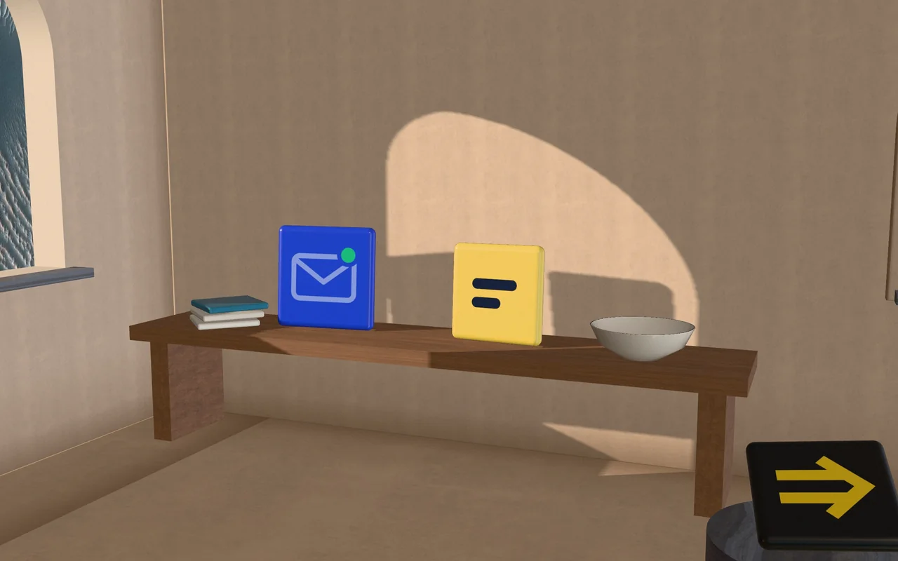
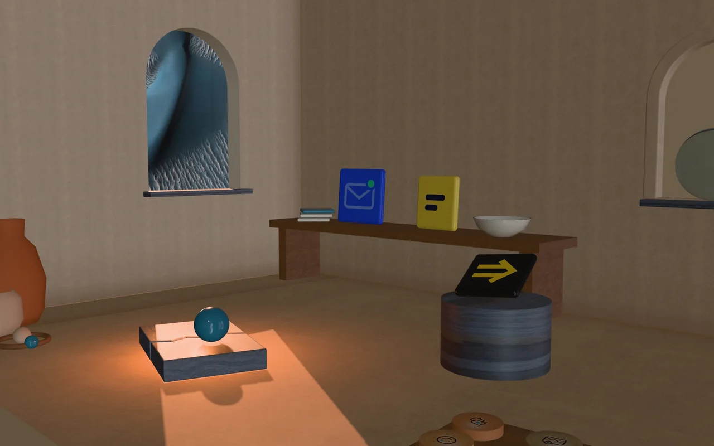
hero/ hero-morning · hero-bench · hero-dusk — 1280×800 + @2x 2560×1600 (webp, avif for @2x). Baked from 3d/room.js.
Fired earth,
one glaze.
Warm limewash, sand and clay carry the page. Terracotta and ember are for warmth and the molten moments. The seed hue, 228°, appears only as glaze: one drop per icon, the sphere on the ledge, the dunes in the window.
Tall serif,
quiet grotesk.
Instrument Serif for display, set large and loose, italic for the warm word. Geist for text. Geist Mono for facts, figures and captions. All OFL, on Google Fonts.
Display · 400 / italic
−1% tracking, 0.9 leading
Text · 300–700
17–20px, 1.55
Facts · 400/500
12–15px, caps +14%
claude mcp add albretsen https://albretsen.no/mcp
An arch, a ledge,
a sphere at rest.
The mark is a niche in a wall: the arch and ledge read as a soft A, and the glazed sphere is the work, set down carefully. The wordmark is Instrument Serif outlined to paths.

identity/wordmark.svg
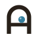
identity/mark.svg
identity/mark-reverse.svg
wordmark-reverse.svg
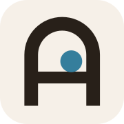
favicon.svg (auto dark) · apple-touch-icon-180.png
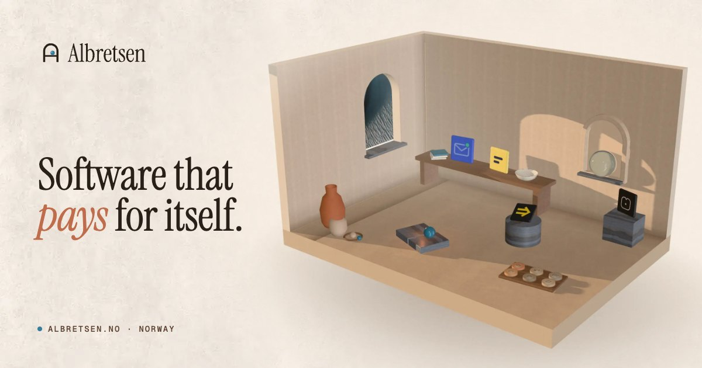
identity/og.jpg · 1200×630
Real logos,
fired as tiles.
Each live or building product is its real logo, unaltered, on a glazed ceramic tile in the room, photographed when the light reaches it. Hover the figures.
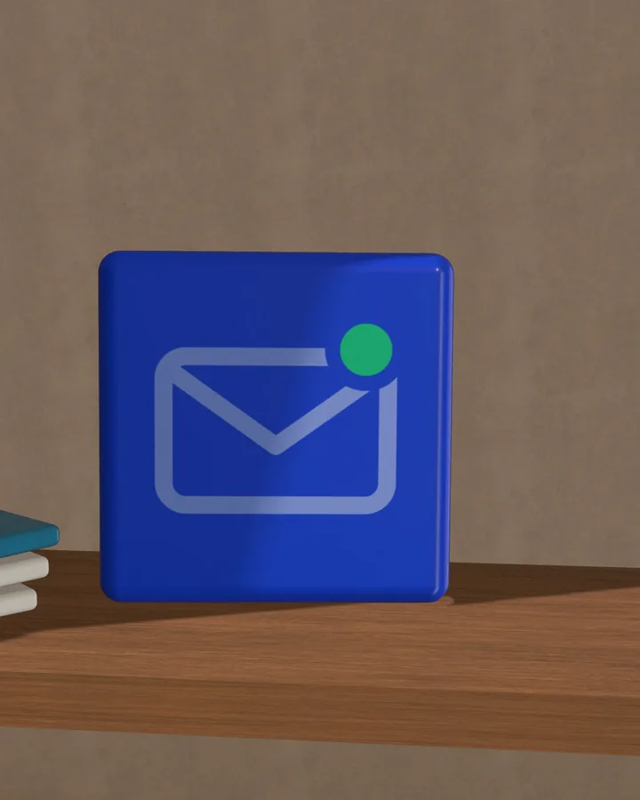
MCP Emails live · 2026
Email for AI agents.
$782 MRR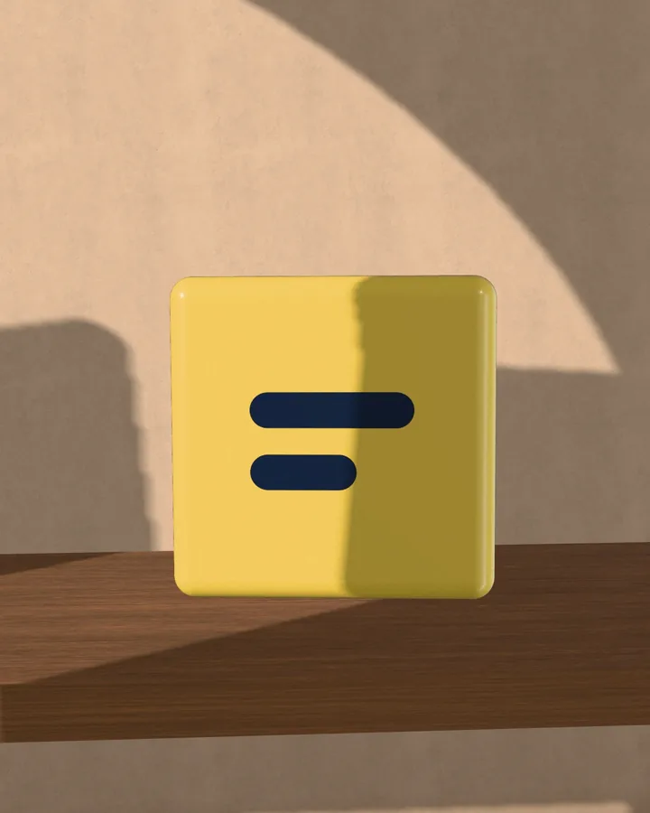
Fun Libs live · 2019
A fill-in-the-blanks word game.
113,000+ installs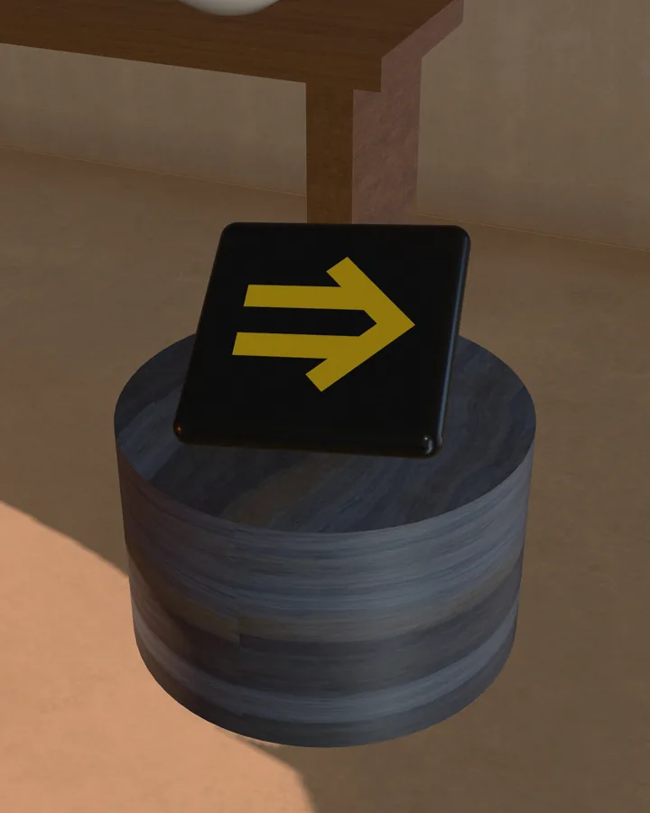
Toolrails building
One MCP URL that gives an agent every tool.
4 connectors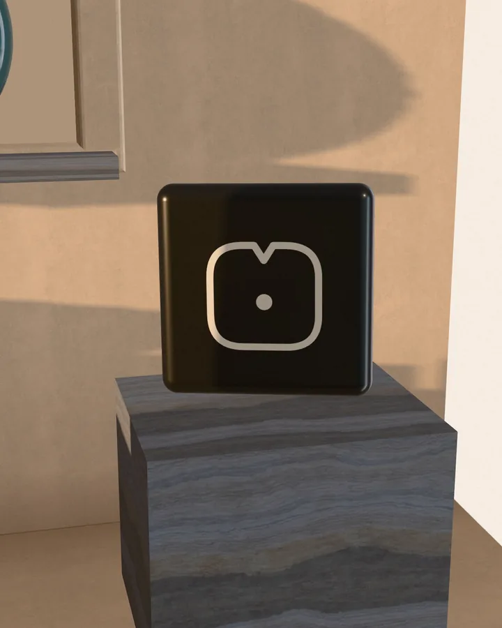
Harbor paused
A private knowledge base shared by people and AI.
549 commitsproducts/ 720×900 + @2x 1440×1800 webp. Logos from designs/_shared/products, used as-is (Harbor's mark is currentColor by design, set in its banner cream).
Retired, kept
on a tray.
Products without surviving brand assets get a clay token pressed with a glyph from the icon system. They sit on a walnut tray in the corner of the room: honest, small, not hidden.
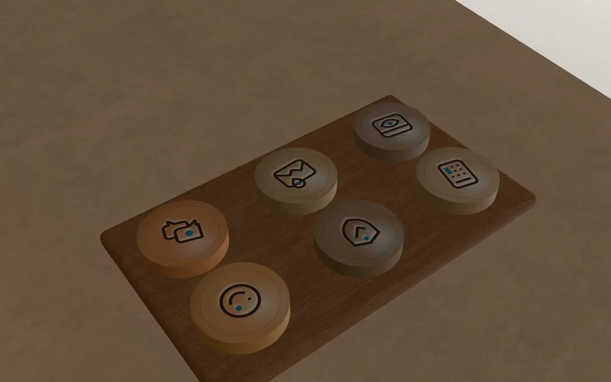
One stroke,
one drop of glaze.
24px grid, 1.5 stroke, round joins, 2px keyline. Every glyph carries exactly one filled form in glaze blue: the object in the room. Used small in UI, huge as section art, pressed into clay as tiles, die-cut as stickers. Hover: the glaze turns ember.
icons/ icons.js (source of truth, svg() helper) · sprite.svg (<use href="#k-name">) · svg/*.svg · extras/tile-*.webp pressed-clay tiles (SVG sources beside them).
Things to place
around the room.
The window looks out on real dunes in Proctor Crater, Mars (NASA/JPL/UArizona HiRISE). Crackle glaze, window light, limewash grain, a travertine band, stickers.
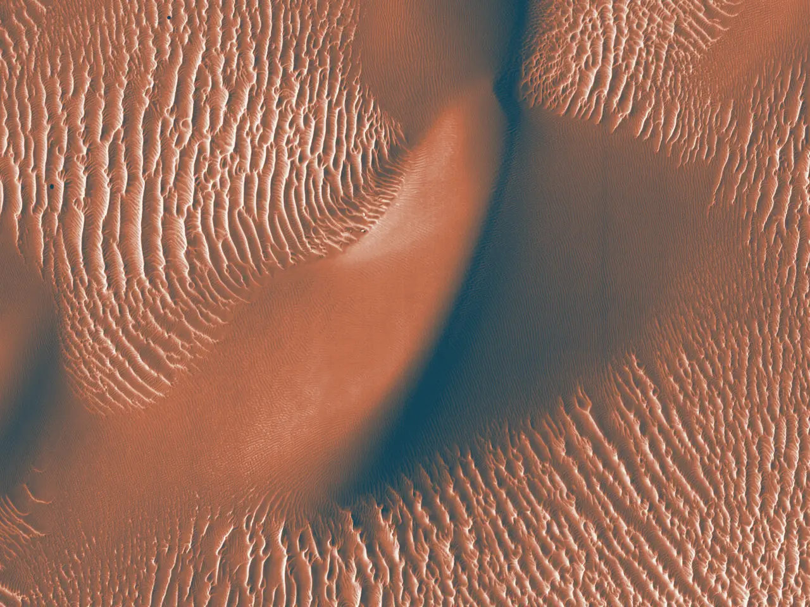
dunes-duotone.webp · full-bleed band behind facts
fracture-field.svg · crackle-glaze network, one molten seam (section backgrounds)
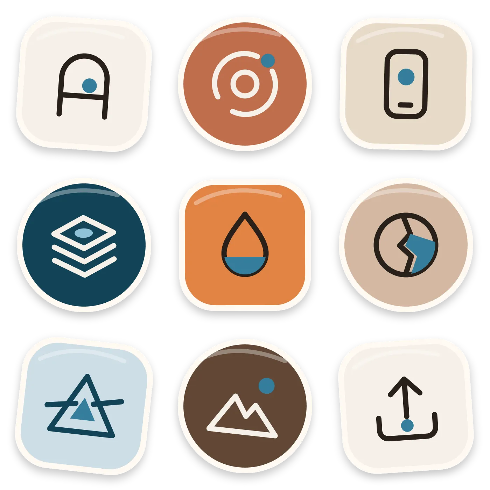
stickers.webp · die-cut glazed stickers (scatter in footer / 404)
window-light.webp · gobo overlay that drifts over 38s (.k-windowlight)
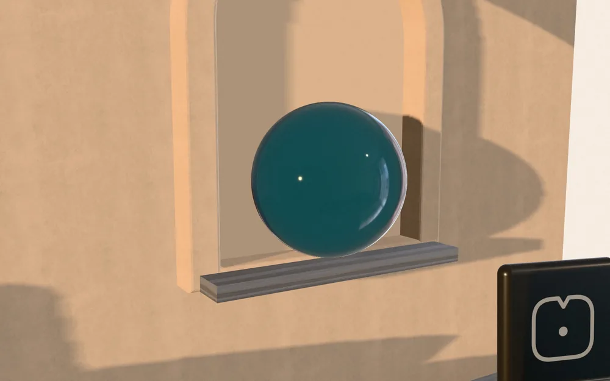
glass-niche.webp · clarity: the glass sphere in its niche
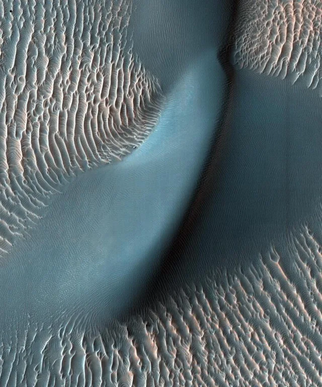
dunes-window.webp · crop for an arch-masked image
limewash-tile.webp · seamless page grain (this page uses it)
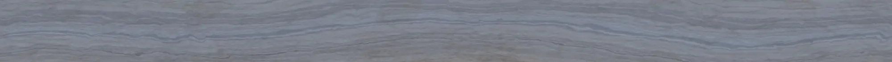
strata-band.webp · travertine divider
The room, live.
The same scene the frames were baked from, running in the browser: pointer parallax, objects lift when hovered, a time-of-day slider moves the sun. Loads only when asked.
3d/room.js createRoom(canvas) → setTime(t), setView(name), setProgress(p), start() · demo: 3d/demo.html
Slow light,
soft clay.
Every primitive keys off Radix's own data-state attributes and CSS variables, so motion.css drops onto @radix-ui components unchanged. Turn sound on for the full effect.
Strata
Accordion · height + sediment line + content settles
Whatever is profitable: apps, SaaS and infrastructure for AI agents. Sometimes a consulting engagement.
Published on Google Play since 2016. Consulting since 2021. The company since 2026.
Takes one outside engagement at a time.
Niche open
Dialog · grows out of an arch-shaped clip, closes back into it
Drip
Tooltip · droops from its trigger, settles
MCP Emails Fun LibsPebble
Tabs · indicator glides like a stone on wet clay; panel focus-pulls
Email for AI agents. 17 tools, about 100 providers, AGPL.
A fill-in-the-blanks word game for Android and iOS. 113,000+ installs.
One MCP URL that gives an agent every tool. Tool search, injection guard.
Lift & Kiln glow
Hover card rises; cards carry a cursor-tracked glaze sheen
Hover Harbor for a card.
Focus pull
Entrance · blur 10px → 0 and a 14px rise, letters staggered 32ms